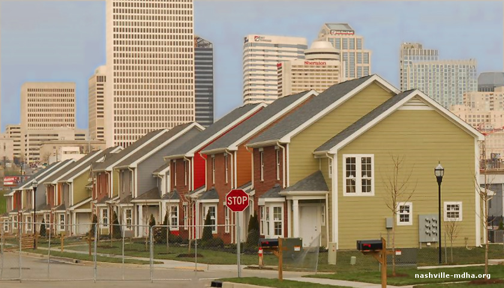

Covid-19 Data Exploration and Analysis
This project demonstrates comprehensive data exploration and analysis of Covid-19 datasets using Microsoft SQL Server, highlighting trends, insights, and visual summaries.
This project demonstrates comprehensive data exploration and analysis of Covid-19 datasets using Microsoft SQL Server, highlighting trends, insights, and visual summaries.

Demonstrates data cleaning and preprocessing on the Nashville Housing dataset using SQL Server, handling missing, duplicate, and inconsistent data, and standardizing values for accurate analysis.

Showcases interactive Tableau dashboards for complex datasets, including dynamic charts, KPI tracking, and trend analysis for actionable data insights.
Analyzes a movies dataset to explore relationships between features like budget, gross revenue, runtime, ratings, votes, and release year. Visualizations using Python libraries (Pandas, Seaborn, Matplotlib) highlight strong correlations and trends for better data-driven insights.

Analyzes a movies dataset to explore relationships between features like budget, gross revenue, runtime, ratings, votes, and release year. Visualizations using Python libraries (Pandas, Seaborn, Matplotlib) highlight strong correlations and trends for better data-driven insights.
Dhaka-1211, Bangladesh